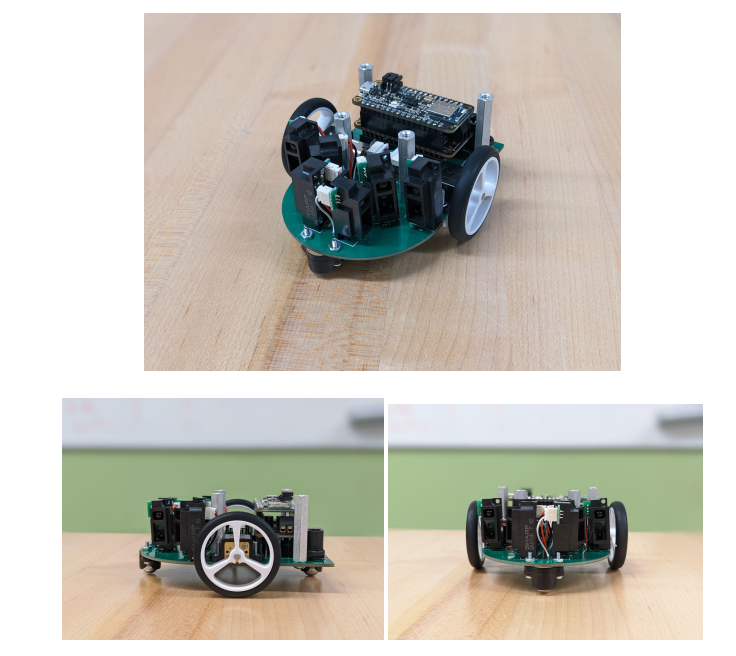

FEATURED HARDWARE PROJECT
Micromouse PCB & Electrical System
Designed and tested a custom PCB for an autonomous Micromouse robot, replacing a breadboard-based electrical system with a compact, integrated platform for sensing, motor control, and power distribution.

PCB layout showing the six IR sensor positions, motor controller, motor connections, and electrical routing.
OVERVIEW
Replacing a breadboard-based robot with an integrated PCB
Previous Union College Micromouse robots relied on breadboards, loose wiring, and larger stacked components. The wiring made the robots harder to troubleshoot and introduced connection problems as the robot moved through the maze.
I designed a custom PCB that served as both the electrical platform and part of the robot's mechanical structure. The goal was to reduce wiring, decrease the size and weight of the system, improve reliability, and create a platform that was easier to test and debug.
SYSTEM ARCHITECTURE
Sensor feedback, motor control, and power distribution
Six IR distance sensors are positioned around the front of the robot to measure the surrounding maze walls. Two motor encoders provide feedback on the speed and direction of the drive motors.
The microcontroller receives the sensor and encoder data and uses those inputs to control the two motors through the motor driver. Separate power connections were incorporated for the controller and drive system.

Electrical schematic connecting the controller, six IR sensors, motor encoders, motor driver, switches, and power input.
DESIGN PROCESS
Designing around electrical and mechanical constraints
01
Sensor Placement
Positioned six IR sensors across the front of the PCB, including forward, side, and 45-degree sensing positions, while maintaining space for routing and mechanical components.
02
Motor Placement
Moved the drive motors toward the center of the board in later revisions to improve balance and place the robot's axis of rotation closer to its center.
03
Power & Ground Planes
Introduced dedicated power and ground planes to simplify routing. This allowed the design to move from an initial four-layer concept to a two-layer PCB.
04
Trace & Clearance Design
Considered current requirements, conductor spacing, trace width, component footprints, routing density, and manufacturing limitations throughout the PCB design.
ITERATION
Three PCB revisions
The PCB went through three design iterations. Each revision was tested and used to identify improvements for the next version.
The second revision revealed a missing motor connection, shorted encoder pins, insufficient clearance for motor mounts, and incomplete silkscreen markings. These problems were corrected in the final design.
Established the original component placement, routing, board geometry, and electrical architecture.
Centralized the motors, removed the secondary PCB, introduced power and ground planes, and simplified the board architecture.
Corrected electrical faults, improved motor-mount clearance, refined sensor placement, and added clearer silkscreen markings.
TESTING & VALIDATION
Validating the board before and after assembly
Design Rule Check
Used PCB design-rule checks before fabrication to verify electrical connections, trace widths, and conductor spacing.
Continuity Testing
Cross-referenced PCB connections against the schematic and used a digital multimeter to verify continuity before and after component soldering.
IR Sensor Testing
Tested the sensors against maze walls and plotted their analog responses to verify that changes in wall distance were being measured correctly.
Motor Encoder Testing
Monitored encoder feedback while changing motor speed and used oscilloscope-based troubleshooting when investigating motor and encoder signals.
FINAL RESULT
From PCB design to an assembled robotic platform
The final PCB passed continuity testing and successfully integrated the IR sensors, motor encoders, motor controller, microcontroller, drive motors, and supporting mechanical components.
Replacing the previous breadboard-based architecture reduced wiring clutter, improved debugging access, lowered the physical profile of the robot, and created a more durable platform for continued development by the robotics team.

Final assembled Micromouse showing the custom PCB integrated with the IR sensors, drive motors, wheels, motor controller, microcontroller, and mechanical supports.
KEY TAKEAWAYS
What I learned
This project gave me experience taking a PCB from system-level requirements through schematic development, layout, fabrication, assembly, testing, and multiple design revisions.
It also reinforced how closely electrical and mechanical decisions interact in a robotic system. Component placement affected routing, sensing performance, balance, turning behavior, assembly, and accessibility during debugging.